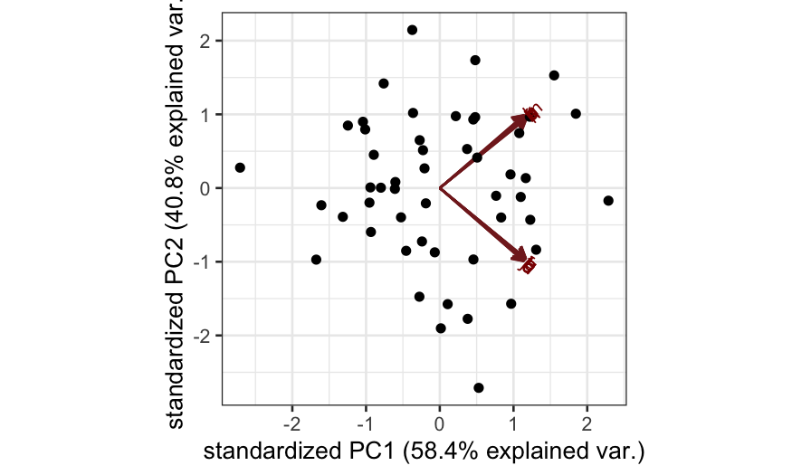
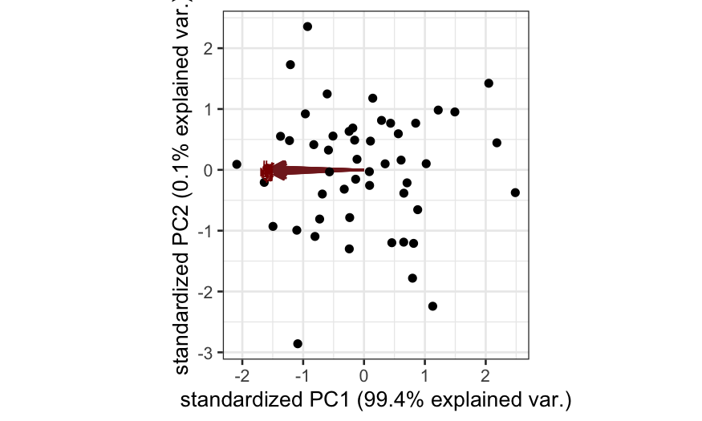
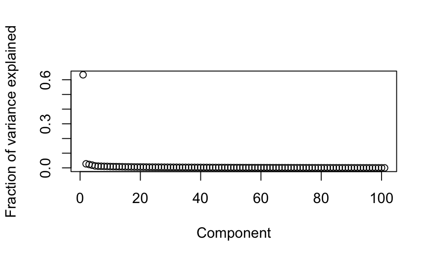
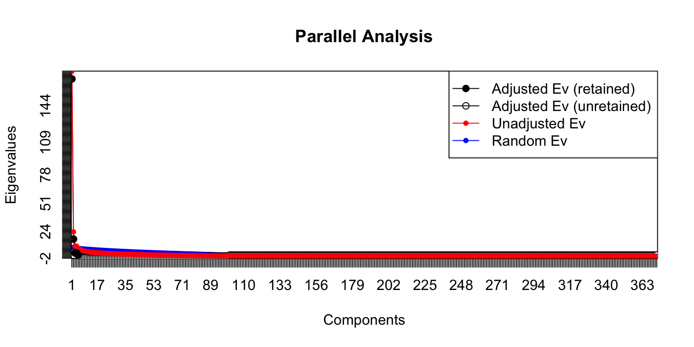

Stat 470/670 Lecture 24: Categorical data and contingency tables
Julia Fukuyama
November 8, 2018
Motivating example: UCB Admissions Data
Reading: vcd tutorial
The admissions data is formatted as a three-way contingency table.
In a contingency table, each dimension of the table (rows and columns for two-way tables) gives the levels of one variable.
For the admissions data, we have
Admit: Whether the applicant was admitted, either Admitted or Rejected,
Gender: The gender of the applicant, either Male or Female,
Dept: The academic department the applicant wanted admission into, labeled A through F.
The cells in the table represent the number of observations with each combination of values: the [1,1,1] element of UCBAdmissions is the number of admitted men to Department A, the [2,1,1] element is the number of rejected men to Department A, and so on.
library(vcd)
data(UCBAdmissions)
UCBAdmissions
## , , Dept = A
##
## Gender
## Admit Male Female
## Admitted 512 89
## Rejected 313 19
##
## , , Dept = B
##
## Gender
## Admit Male Female
## Admitted 353 17
## Rejected 207 8
##
## , , Dept = C
##
## Gender
## Admit Male Female
## Admitted 120 202
## Rejected 205 391
##
## , , Dept = D
##
## Gender
## Admit Male Female
## Admitted 138 131
## Rejected 279 244
##
## , , Dept = E
##
## Gender
## Admit Male Female
## Admitted 53 94
## Rejected 138 299
##
## , , Dept = F
##
## Gender
## Admit Male Female
## Admitted 22 24
## Rejected 351 317
## the structable command in vcd lets us re-arrange contingency tables
structable(Admit ~ Gender, data = UCBAdmissions)
## Admit Admitted Rejected
## Gender
## Male 1198 1493
## Female 557 1278
What questions do we have here?
For the admissions data (and generally for contingency tables), the first thing we want to know is whether the numbers are consistent with independence between the variables we measured.
In particular, for the admissions data, we want to know whether admission is independent of gender: if it's not, we might suspect that there is some sort of gender-based discrimination happening in the admissions process, and we would want to complain to someone.
If the variables aren't independent of each other, we want to know what the cause is.
Chi-squared test of independence
If all we care about is testing, we could just use a chi-squared test of independence and be done.
chisq.test(structable(Admit ~ Gender, data = UCBAdmissions))
##
## Pearson's Chi-squared test with Yates' continuity correction
##
## data: structable(Admit ~ Gender, data = UCBAdmissions)
## X-squared = 91.61, df = 1, p-value < 2.2e-16
If we do that test, we see that the two factors are not independent, but that still leaves a lot of work for us: what is the nature of the non-independence? What cells in the contingency table are over- or under-represented compared to what we would expect under independence of the two factors?
Mosaic plot
A mosaic plot gives a visualization of a two-way contingency table.
Each cell in the contingency table is represented by a tile, and the area of the tile is proportional to the number of observations in the corresponding cell of the contingency table.
Let's take a look at the admissions data with a mosaic plot.
Here we're looking at admission and gender. The area of each tile shows us how many applicants were in each of the four categories: either admitted/male, admitted/female, rejected/male, or rejected/female.
The heights of the tiles represent the overall fraction of applicants that were male or female. (If we call the function the other way, mosaic(~ Admit + Gender), the heights of the tiles would represent the overall fraction of applicants that were admitted or rejected, you can try it out and see.)
mosaic(~ Gender + Admit, data = UCBAdmissions)
The really nice thing about mosaic plots is that they tell us about departures from independence.
It turns out (you can try to figure the math out yourself if you're interested) that if the factors were really independent of each other, the boundaries of the tiles would match up, and we would have something that looks like this:
mosaic(independence_table(structable(Admit ~ Gender, data = UCBAdmissions)))
To the extent that the boundaries of the tiles don't match, we can see which categories are over-represented or under-represented.
The R function allows us to color the tiles as an additional way to show departures from independence: in the coloring scheme below, blue tiles represent cells that have more observations than we would expect if the factors were independent, and red tiles represent cells that have fewer observations than we would expect if the factors were independent.
mosaic(~ Gender + Admit, data = UCBAdmissions, gp = shading_max)

The colors represent residuals from the independence model: how many more observations do we have than we would expect if the factors were actually independent of each other?
There are a number of different options for coloring, but they are all based on deviations from expected values under the independence model.
Conditional independence
We've seen that there's a lack of independence between gender and admission, so we would like to investigate more to see if we can explain the non-independence.
We have one other variable in our contingency table: Department.
We can look at how the departments differ in their admissions rates and in the gender composition of their applicant pools:
structable(Dept ~ Admit, data = UCBAdmissions)
## Dept A B C D E F
## Admit
## Admitted 601 370 322 269 147 46
## Rejected 332 215 596 523 437 668
structable(Dept ~ Gender, data = UCBAdmissions)
## Dept A B C D E F
## Gender
## Male 825 560 325 417 191 373
## Female 108 25 593 375 393 341
Or, more to the point of this course, we can look at the same information graphically:
mosaic(~ Dept + Gender, data = UCBAdmissions, gp = shading_max)

mosaic(~ Dept + Admit, data = UCBAdmissions, gp = shading_max)
Note that here, when we plot with Dept on the vertical axis, it is easy to compare the conditional probabilities of gender given department (from the first plot) or admission given department (from the second plot) by comparing the widths of the bars. If we had plotted the other way (mosaic(~ Dept + Gender)), we would have to compare areas instead of widths, which is much more difficult perceptually.
Since the different departments both admit students at very different rates and have very different proportions of male and female applicants, it is possible that the relationship between admission and gender is very different conditional on department than it is unconditionally.
Cotab plot
Next, we want to know about independence or lack of independence conditional on department. A good tool for this is a cotab plot, which is the analog of a coplot, but for categorical data.
A cotab plot tells us about the conditional independence of two variables (the two explanatory variables) given a third (the given variable).
Each panel corresponds to a subset of the data that all have the same value of the given variable.
In each panel, we make a mosaic plot describing the relationships between the two explanatory variables.
The cotab plot allows us to see not only whether the variables are conditionally independent, but also whether the variables are conditionally independent for some values of the given variable. If there is a lack of conditional independence, it shows us which combinations of factor levels are over- or under-represented.
Cotab plot for admissions data
Let's try this on the admissions data.
We want to know whether gender and admission are independent conditional on department.
cotabplot(~ Gender + Admit | Dept, data = UCBAdmissions, gp = shading_max, margins = rep(0, 4))
The syntax for the cotab plot is that the variable to the right of the | is the given variable (in this case, Dept), and the variables to the left of the | and to the right of the ~ are the two explanatory variables.
Double decker plot
When we have one response variable that we are particularly interested in, and if we want to see how the conditional probability changes with the levels of several other factors, we can also use a doubledecker plot.
A doubledecker plot is like a mosaic plot, but the vertical axis gives us the conditional probabilites of the response variable, and the horizontal axis gives us the probabilities of all the remaining factor combinations.
This can be helpful when we are more interested in comparing conditional probabilities than we are in looking for conditional independence.
Double decker plot for admissions data
We can try a doubledecker plot on the admissions data.
Here the height of the first bar gives the conditional probability of admission given that the applicant was male and applying to Department A, the height of the second bar gives the conditional probability of admission given that the applicant was female and applying to Department A, and so on.
The widths of the bars represent the probabilities of the categories: the width of the first bar is proportional to the number of male applicants to Department A, the width of the second bar is proportional to the number of female applicants to Department B, and so on.
doubledecker(Admit ~ Dept + Gender, data = UCBAdmissions)
## nitpicky plotting modification: plots go in the same order as
## the array, so if we want admitted to be on bottom we need to
## switch the order of admit vs. rejected in the UCBAdmissions array
doubledecker(Admit ~ Dept + Gender, data = UCBAdmissions[2:1,,])

The syntax here is that the variable to the left of the ~ is plotted on the vertical axis, and the variables to the right of the ~ are plotted on the vertical axis, with the first factor being grouped first, and subsequent factors being grouped separately.
The order you put the variables to the left of the ~ makes a big difference in what information you can easily read off the plot. When we have Admit ~ Dept + Gender, it's easy to see the differences between male and female admissions within each department because those bars are placed next to each other.
If we do it the other way around, we're plotting the same information, but it's now easier to read off the differences in admission rates by department instead of the differences in admission rates by gender.
doubledecker(Admit ~ Gender + Dept, data = UCBAdmissions[2:1,,])
